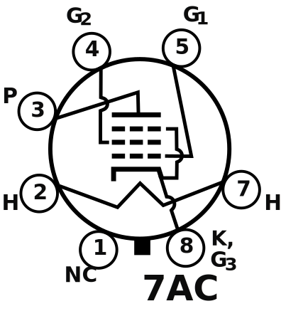

| Name(s) |
Notes |
Type |
Constants |
Max Values |
Layout |
| μ |
rp (Ω) |
gm (μ℧) |
PA (W) |
VA (V) |
Base |
EIA Terminal Diagram |
| 12AX7, ECC83, 7025 |
1947, RCA |
High mu twin triode |
100 |
63-80k |
1250-1600 |
1.2 |
330 |
Noval |
|
| 12AY7, 6072 |
first stage of high gain amp |
Medium mu twin triode |
40 |
22.8k |
1750 |
1.5 |
300 |
| 12AT7, ECC81, 6201 |
better for high frequency |
60 |
11-15k |
4-5.5k |
2.5 |
300 |
| 12AU7, ECC81, 6201 |
low noise, hifi, phase inverter, tone stack |
17-19.5 |
6.3-7.7k |
3.1-2.2k |
2.75 |
300 |
| 12BH7, ECC99 |
|
16.5 |
5.3k |
3.1k |
3.5 |
300 |
| 5751 |
swap with 12AX7 for less overdrive. good phase inverter. Low max dissipation. |
70 |
58k |
1.2k |
0.8 |
330 |
| E88CC, 6922 |
high transconductance, long life |
33 |
2.9-2.6k |
11.5-12.5k |
1.5 |
250 |
| 6FQ7, 6CG7 |
high wattage, 1954 |
20 |
6.7-7.7k |
2.6-3k |
4 |
330 |
|
| 6SN7 |
high wattage, 1939, mostly used in hifi |
20 |
6.7-7.7k |
2.6-3k |
5 |
450 |
Octal |
|
| 6SL7 |
used as phase inverter |
70 |
44k |
1.6k |
1 |
300 |
| EF86, 6267 |
1954, low noise |
Small signal pentode |
185 |
|
|
1 |
300 |
Noval |
|
| Name(s) |
Notes |
Type |
Max Values |
Layout |
| PA (W) |
.7*PA (W) |
VA (V) |
Base |
EIA Terminal Diagram |
| 6L6GC, 5881 |
Metal can 6L6 invented by RCA 1936 |
Beam Tetrode |
30 |
21 |
500 |
Octal |
 |
| 6V6GT |
Metal can 6V6 invented by Ken-Rad 1936 as low power 6L6 for radio use. |
14 |
9.8 |
350 |
| KT66 |
invented by Marconi-Osram (GEC) in 1937. More robust than original 6L6 |
25 |
17.5 |
500 |
| EL34 |
Invented by Mullard in 1949 |
Power Pentode |
800 |
|
| 6CA7, KT77 |
Sylvania and GEC created their own versions of the popular EL34 in 1949 |
Beam Tetrode |
| 6550 |
Invented by Tung-Sol in 1954. High Power, low distortion |
35 |
24.5 |
600 |
|
| KT88 |
Invented by GEC in 1956. High Power, low distortion |
42 |
29.4 |
800 |
| EL84, 6BQ5 |
Invented by Mullard in 1953. High gain to eliminate driver tube |
Power Pentode |
12 |
8.4 |
300 |
Noval |
|
| 7189 |
Extended ratings EL84 |
400 |
| 7591 |
|
19 |
13.3 |
550 |
Octal |
|
| 7027 |
|
Beam Tetrode |
25 |
17.5 |
450 |
|